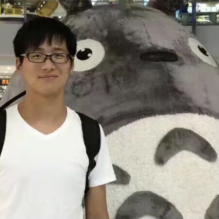

|  |
Chaoyou Fu 傅朝友
Ph.D. Candidate
|
2020.11.02, One paper is accepted by NeurIPS 2020
2020.02.24, One paper is accepted by CVPR 2020
2019.09.04, One paper is accepted by NeurIPS 2019
2019.05.10, One paper is accepted by IJCAI 2019
I received my Bachelor degree from Anhui University (AHU) in 2017 under the supervision of Prof. Shuping He. I am currently a Ph.D. Candidate of National Laboratory of Pattern Recognition (NLPR), Institute of Automation, Chinese Academy of Sciences (CASIA) under the supervision of Prof. Ran He. My research focuses on face recognition and image synthesis.
DVG-Face: Dual Variational Generation for Heterogeneous Face Recognition
Chaoyou Fu, Xiang Wu, Yibo Hu, Huaibo Huang, Ran He
arXiv, 2020
PDF
|
BibTex
Deep Momentum Uncertainty Hashing
Chaoyou Fu, Guoli Wang, Xiang Wu, Qian Zhang, Ran He
arXiv, 2020
PDF
|
BibTex
High Fidelity Face Manipulation with Extreme Poses and Expressions
Chaoyou Fu, Yibo Hu, Xiang Wu, Guoli Wang, Qian Zhang, Ran He
arXiv, 2020
PDF
|
BibTex
AOT: Appearance Optimal Transport Based Identity Swapping for Forgery Detection
Hao Zhu*, Chaoyou Fu*, Qianyi Wu, Wayne Wu, Chen Qian, Ran He (*Equal Contribution)
Conference on Neural Information Processing Systems (NeurIPS), 2020
PDF
|
BibTex
Cross-Spectral Face Hallucination via Disentangling Independent Factors
Boyan Duan*, Chaoyou Fu*, Yi Li, Xingguang Song, Ran He (*Equal Contribution)
IEEE Conference on Computer Vision and Pattern Recognition (CVPR), 2020
PDF
|
BibTex
Dual Variational Generation for Low Shot Heterogeneous Face Recognition
Chaoyou Fu, Xiang Wu, Yibo Hu, Huaibo Huang, Ran He
Conference on Neural Information Processing Systems (NeurIPS), 2019
PDF
|
Code
|
BibTex
Neurons Merging Layer: Towards Progressive Redundancy Reduction for Deep Supervised Hashing
Chaoyou Fu, Liangchen Song, Xiang Wu, Guoli Wang, Ran He
International Joint Conference on Artificial Intelligence (IJCAI), 2019
PDF
|
BibTex
2019.10, National Scholarship
2015.11, National Scholarship
2015.08, Second Prize in the National Smart Car Competition “飞思卡尔”杯国赛二等奖